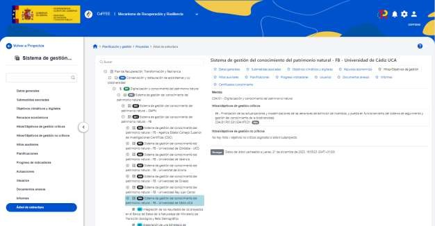

Fondos Europeos
Ámbito de los fondos europeos¶
El soporte tecnológico que la Secretaría General de Fondos Europeos (SGFE) requiere de la OIP se puede estructurar en distintos ámbitos de actuación:
-
El desarrollo y mantenimiento de los sistemas de información que la OIP implanta para dar soporte a las competencias de la SGFE.
-
Actividades relacionadas con la explotación de la información mediante herramientas de análisis de datos, generación de informes y cuadros de mando que contribuyan a la gestión del conocimiento.
-
El soporte en la utilización de otros servicios y plataformas en cuanto a disponibilidad, administración y configuración, bien sean proporcionados por la propia OIP o ajenos a ella.
-
Atención a usuarios, incluyendo los usuarios externos a la SGFE que se relacionan con ella a través de las herramientas informáticas que se ponen a su disposición, y también el propio personal de la SGFE en cuanto al equipamiento informático y labores de soporte asociadas.
Los siguientes apartados detallan las necesidades y las actuaciones previstas en los dos primeros, los más relevantes por los recursos que requieren.
Actuaciones previstas en el ámbito del desarrollo y mantenimiento de sistemas de información de soporte a la gestión

Las actuaciones que se realizan para la Secretaría General de Fondos Europeos (SGFE) se agrupan de manera natural de la siguiente forma:
-
La gestión, a partir de las aportaciones del Mecanismo de Recuperación y Resiliencia europeo, del Plan de Recuperación, Transformación y Resiliencia, que lleva a cabo la Dirección General del Plan y del Mecanismo de Recuperación y Resiliencia (DGPlan).
-
La gestión de los fondos europeos y las derivadas de los incentivos regionales competencia de la Dirección General de Fondos Europeos (DGFE), destacando entre ellos el FEDER (crecimiento, empleo y cooperación territorial).
-
Las relacionadas con las necesidades de la Secretaría General de Fondos Europeos en ocasiones sobrevenidas o excepcionales.
-
Las actividades transversales que contribuyen a la gestión de los instrumentos anteriores.
En este contexto, y principalmente para soportar los puntos 1 y 2 de la lista, la Plataforma Común de Fondos Europeos (CoFFEE) se concibe como una herramienta que da acceso a las diferentes aplicaciones utilizadas para la gestión integral de los fondos competencia de la Secretaría General de Fondos Europeos para el período 2021-2027. En este sentido, actualmente la plataforma CoFFEE soporta las aplicaciones que gestionan los siguientes fondos y mecanismos:
-
Mecanismo Europeo de Recuperación y Resiliencia y el Plan Nacional de Recuperación, Transformación y Resiliencia.
-
FEDER, objetivo de Inversión en Empleo y Crecimiento 2021-2027.
-
FEDER, objetivo de Cooperación Territorial Europea 2021-2027.
El alcance de la plataforma CoFFEE se prevé ampliar para dar cabida a otros fondos gestionados por la SGFE, como el Fondo de Transición Justa (cuyos trabajos ya están de hecho siendo llevados a cabo).
Gestión del Plan de Recuperación, Transformación y Resiliencia¶
El Plan de Recuperación para Europa es una iniciativa de la Unión Europea nacida para ayudar a reparar los daños económicos y sociales causados por la pandemia de coronavirus: la Comisión Europea, el Parlamento Europeo y los dirigentes de la UE han acordado un plan de recuperación que pretende liderar el camino hacia la salida de la crisis y sentar las bases para una Europa moderna y más sostenible.
El Plan integra el presupuesto a largo plazo de la UE (el marco financiero plurianual previsto para 2021-2027) y un instrumento temporal concebido para impulsar la recuperación, el denominado “Next Generation EU”, que incluye tanto la Ayuda a la Recuperación para la Cohesión y los Territorios de Europa (REACT-UE) como el Mecanismo de Recuperación y Resiliencia.
El Mecanismo de Recuperación y Resiliencia (MRR) tiene por objetivo mitigar el impacto económico y social de la pandemia de coronavirus y hacer que las economías y sociedades europeas sean más sostenibles y resilientes y estén mejor preparadas para los retos y las oportunidades de las transiciones ecológica y digital. El MRR se rige por el Reglamento 2021/241 del Parlamento Europeo y del Consejo, que establece que cada Estado miembro que pretenda optar a la financiación con arreglo al Mecanismo debe elaborar y presentar a la Comisión Europea un plan de recuperación y resiliencia que establecerá su programa de reformas e inversiones. Mediante el seguimiento del cumplimiento de los hitos y objetivos establecidos por el plan se llevará a cabo el libramiento de fondos por tramos, hasta 2026.
En el ámbito nacional, el Plan de Recuperación, Transformación y Resiliencia es el instrumento rector para el diseño y ejecución de los objetivos estratégicos y las reformas e inversiones que, vinculadas al Mecanismo de Recuperación y Resiliencia, servirán para favorecer la cohesión económica, social y territorial de España. El Plan involucra todos los niveles de las administraciones públicas, estatal, autonómica y local, y al sector privado.
El Plan presentado a la Comisión Europea contiene, a grandes rasgos, el conjunto de componentes, medidas, los hitos y objetivos que se pretende alcanzar con esas medidas y los indicadores que monitorizan el cumplimiento, así como su calendario previsto, lo que determina los tramos de los correspondientes desembolsos. El Plan se aprobó mediante Decisión de Implementación del Consejo de la Unión Europea en julio de 2021, por la cual se establecía el libramiento de las ayudas no reembolsables en base a la tramitación de seis solicitudes de pago a lo largo del período. La posterior aprobación de la Adenda del Plan liberaba una capacidad financiera adicional (y equivalente en importe total) en forma de préstamos, al tiempo que reconfiguraba los tramos de pago, que quedan establecidos en diez.
La Secretaría General de Fondos Europeos asume un papel determinante tanto como autoridad responsable del MRR ante las instituciones europeas como ejerciendo la responsabilidad general de los planes de recuperación no solamente en cuanto a la coordinación con la Comisión Europea y sus funciones de información, comunicación y seguimiento, sino también como coordinadora de las acciones financiadas por dicho Mecanismo y con todas las entidades nacionales y comunitarias implicadas en el Plan.
Durante 2021 la Oficina de Informática Presupuestaria concibió el escenario tecnológico más adecuado para facilitar estas tareas, de manera coordinada con los sistemas de información existentes e integrada en los que darían soporte a la política de Cohesión del marco financiero 2021-2027.
El soporte informático del Plan de Recuperación se materializa en un módulo específico de la plataforma CoFFEE, CoFFEE-MRR, que atiende las necesidades concretas de ese ámbito de manera progresiva.
El alcance territorial del ámbito del Plan está suponiendo un reto de grandes proporciones ya que además de los propios procesos de gestión, el sistema debe implementar mecanismos descentralizados que permitan a los respectivos responsables de las estructuras de información gestionar los flujos de solicitud y autorización de acceso al sistema y a las estructuras de las que son responsables.
Unido esto a que la implementación viene teniendo lugar de manera paralela a la concreción de los propios procedimientos de gestión y la necesidad de que estén disponibles para su uso de manera progresiva, da idea de la complejidad que está suponiendo la puesta en marcha del sistema.
Las medidas (reformas e inversiones) en que se materializan los componentes del Plan se abordan mediante los denominados “nodos”, cuyo primer nivel es el de proyectos, los que se descomponen en subproyectos y/o subproyectos instrumentales en una estructura anidada de profundidad no limitada.
El ciclo de vida en CoFFEE-MRR de los elementos que componen el Plan, consta de 4 etapas: definición, planificación, ejecución y seguimiento, y acreditación de cumplimiento.
- Definición. Se establece la responsabilidad, duración y alcance del proyecto/subproyecto. Se determina el órgano gestor responsable de la ejecución, el ámbito temporal, el presupuesto previsto, y los hitos/objetivos que cumplir.
El resultado es validado por los responsables de medida y revisado por la SGFE, para proyectos; y por los responsables del subproyecto y del proyecto, para subproyectos.
- Planificación. Se descompone el proyecto/subproyecto en las actuaciones a ejecutar y se fija su previsión presupuestaria, los hitos/objetivos que abordarán y su marco temporal.
La planificación finaliza con la validación y revisión por los responsables de los niveles superiores.
- Ejecución y seguimiento. Se suministra la información de progreso de los indicadores que determinan el cumplimiento de los hitos/objetivos, debiendo proporcionar la correspondiente documentación acreditativa.
Asimismo, el sistema debe contemplar mecanismos de seguimiento y previsión como los informes de previsiones, los informes de seguimiento y los informes de gestión. Estos últimos recogen el estado de cumplimiento de los hitos y objetivos y los recursos empleados.
- Acreditación de cumplimiento. Se proporciona la información que demuestra el cumplimiento de los hitos/objetivos, destacando los mecanismos de verificación y los certificados de cumplimiento.
En un proceso progresivo, hasta el final de 2024 se han venido incorporando en CoFFEE-MRR funcionalidades de carga y consulta del Plan, así como las que permiten el soporte a los procedimientos de definición y planificación de proyectos y subproyectos, las herramientas para registrar el progreso de los indicadores que determinan el cumplimiento de los hitos y objetivos, la generación de los certificados que acreditan el cumplimiento de dichos hitos y objetivos, el tratamiento de información, en colaboración con el sistema MINERVA de la Agencia Tributaria, para facilitar el análisis de conflicto de intereses en los contratos y subvenciones sujetos a ello, y otras funcionalidades de soporte como la gestión de la seguridad, cargas y descargas de información y explotación con herramientas analíticas. A lo largo del año 2024 se han incorporado mejoras funcionales en la mayoría de los módulos del sistema, se ha incorporado el soporte de nuevas entidades como los Hitos de Gestión sin reporte de indicadores o la certificación de la no revocación de hitos cumplidos en solicitudes de pago previas, se ha abierto la ejecución de informes a todo el colectivo de usuarios, y se han puesto en operación mecanismos de consulta e introducción de información a través de servicios electrónicos (API).
Todo ello ha contribuido de forma creciente a la tramitación de las declaraciones de gestión y solicitudes de pago a la Comisión Europea con arreglo al Mecanismo (cinco de ellas por el momento), siendo objetivo prioritario que se alcance de manera progresiva el soporte pleno a la metodología planteada.

Debido a los condicionantes temporales y de recursos y a la necesidad de desarrollar el sistema de forma simultánea a la propia gestión, varias cuestiones que no se pueden despreciar han acompañado a estos desarrollos:
-
Elevado número de incidencias que se deben procesar para atender funcionalidades no suficientemente probadas.
-
Funcionalidades no desarrolladas en todo su alcance, que dan lugar a necesidades pendientes de completar y que son atendidas de forma transitoria por parte de los equipos de soporte informático tanto de la SGFE como de la OIP, estos últimos mediante actuación directa sobre los datos en numerosas ocasiones.
En relación al primero de los puntos, la mejora de la calidad de los despliegues incrementando los ciclos de pruebas ha aumentado la estabilidad del sistema desde su implantación en 2023 y especialmente a lo largo de 2024, lo que ha permitido reducir significativamente el número de incidencias que se gestionan por el servicio de soporte en la OIP. Aparte de continuar esta senda, queda impulsar las actuaciones orientadas a completar desarrollos que perfeccionen la propia gestión de la información.
Adicionalmente, se identifican nuevos retos a tener en cuenta en las previsiones:
-
Aumento significativo de la información gestionada por el sistema, tanto en datos estructurados como en documentos.
-
Aumento de la casuística a considerar y de situaciones fuera de la norma general, que será necesario poder abordar con agilidad.
-
La apertura a usuarios que hasta la fecha no utilizaban el sistema conlleva, por tanto, la lógica curva de aprendizaje. Por ello, es clave incidir en la usabilidad y en los mensajes que ofrece la aplicación al usuario, para guiarle en la medida de los posible y reducir el número de falsas incidencias que dificultan la gestión.
-
Entrada en vigor de nueva normativa que añade nuevos trámites al proceso. En particular, la aprobación de la Adenda al Plan de Recuperación, que además de tener un fuerte impacto en su configuración actual con severas modificaciones en muchas medidas, cambios en la planificación de los cumplimientos de hitos y objetivos, y reconfiguración de los tramos de pago, introduce la figura de los préstamos, lo que requerirá el correspondiente soporte informático.
-
Gestión de las reorganizaciones y cambios administrativos que tienen lugar de forma continuada y, más destacadamente tras los procesos electorales.
-
Como consecuencia del aumento de información a gestionar y revisar, se hace imprescindible automatizar aquellos procesos susceptibles de ello, y aportar nuevas funcionalidades orientada a las unidades coordinadoras y revisoras, así como aportar a los responsables de las entidades ejecutoras e instrumentales mecanismos de supervisión y control sobre sus nodos gestionados.
El reto para el bienio 2025-2026 es dar cuerpo a los módulos del sistema cuya funcionalidad faltante se suple con actuaciones de gestión manuales, y ajustar los procesos que se han implementado de forma parcial como se ha indicado, además de prestar soporte adecuado ante las previsiones de aumento de uso indicadas.
Las necesidades identificadas y que requerirán actuación prioritaria son:
-
Funcionalidades específicas para usuarios de las entidades decisoras, ejecutoras e instrumentales
-
En las fases de Definición, Planificación y Seguimiento:
-
Modificaciones de alcance, que permitan cambios en los nodos y actuaciones una vez están en estado Revisado.
-
Desarrollo de los nuevos elementos que dan soporte a los préstamos añadidos por la Adenda.
-
Configuración de los hitos y objetivos cuya consecución depende de otros previos (CID consecutivos).
-
Mecanismos de gestión de altos volúmenes de información: cambios masivos de Entidades Decisoras, Ejecutoras y Órganos Gestores ante reestructuraciones administrativas.
-
Mejoras en la usabilidad prestando especial atención a la navegación por el sistema, la agrupación de tareas, etc.
-
Mejoras para facilitar la planificación de subproyectos anidados (herencia de hitos auxiliares de planificación).
-
En la fase de Ejecución (progreso y certificación):
-
Tratamiento específico de los distintos instrumentos jurídicos y mejoras en la documentación y su tratamiento.
-
Generación y ciclo de los informes de Gestión a nivel de Componente.
-
Generación y ciclo de los certificados de los Hitos Auxiliares de Definición a nivel de Medida.
-
Tratamiento de los hitos CID en los que participan varias entidades decisoras.
-
Refinamiento del mecanismo de gestión de conflictos de intereses: ajustes específicos por clase de actuación, mejoras en la integración con la solución de la AEAT (MINERVA), mejoras en la gestión de los usuarios implicados en el conflicto de intereses (bajas de responsables de operación, creación y gestión de los editores de operación).
-
Finalización del tratamiento de los ciclos de no revocación: configuración de los ciclos y generación y gestión de los certificados de no revocación a nivel de componente.
-
Mejoras de usabilidad (firma múltiple para responsables), generación de certificados con multitud de mecanismos de verificación.
-
Implementación de las automatizaciones previstas para facilitar el seguimiento del conjunto del Plan (informes de seguimiento).
-
Mejoras en la presentación de información que permita en los elementos superiores de la jerarquía examinar la actividad y situación en los niveles inferiores.
-
Implementación de un sistema de avisos o bandeja de actividades pendientes que facilite la identificación de los momentos en que es preciso llevar a cabo actuaciones por cada agente.
-
Facilidades para gestionar la carga y actualización de los instrumentos jurídicos, en particular las convocatorias y concesiones de subvenciones a partir de la información de la Base de Datos Nacional de Subvenciones (BDNS).
-
En las etapas relacionadas con las solicitudes de pago:
-
Descargas de paquetes de información por hito/objetivo para facilitar el envío a la Comisión Europea (FENIX).
-
Gestión del ciclo de las Solicitudes de Pago: Apertura, cambios de estado, cierre y bloqueo.
-
Gestión de usuarios y seguridad:
-
Mejoras en el perfilado de usuarios: homogeneización de la información de usuarios en los diferentes mecanismos; coherencia entre Responsable, Órgano gestor y su DIR3, evoluciones en las pantallas de aprobación de solicitudes (mejoras de usabilidad).
-
Otros:
-
Reorganización de los puntos de entrada a ciertas funcionalidades (módulos y menús).
-
Mantenimiento y evolución de los servicios electrónicos para interconexión de los sistemas externos que permita tanto la alimentación como la consulta de información.
-
Funcionalidades específicas orientadas a la coordinación
-
Generación de perfiles diferenciados dentro de la SGFE, con las atribuciones adecuadas a las distintas responsabilidades del personal.
-
Desarrollo de funcionalidades específicas y salidas de información orientadas a la detección de incoherencias, errores, conflictos, riesgos, etc.
-
Funcionalidades específicas orientadas al control
-
Desarrollo de perfiles específicos y funcionalidades para dar soporte a los auditores de Comunidades Autónomas en sus funciones de control.
-
Evolución del módulo de auditoría para llevar a cabo las integraciones con los sistemas de auditoría de la IGAE, en su caso (AUDInet).
-
Mejoras en la generación de puntos que faciliten el seguimiento de la trazabilidad de las actuaciones.
-
Funcionalidades horizontales
-
Explotación de la información: Cuadros de mando de seguimiento para la SGFE, IGAE, altos cargos del Estado, organismos con responsabilidad en el Plan y, en su caso, para la ciudadanía.
-
Mejoras en el tratamiento documental: incremento del tamaño máximo de los documentos admitidos, carga múltiple de documentos y, en general, mejoras en pantallas para facilitar el trabajo con información masiva.
Adicionalmente se llevarán a cabo diversas mejoras técnicas en la aplicación, toda vez que las versiones del sistema que se despliegan son continuas:
-
Mejoras de usabilidad.
-
Mejoras de arquitectura para reducir la posibilidad de inconsistencia de los datos y aumentar el rendimiento de la plataforma de operación.
-
Evolución del proceso de pruebas automatizadas para aumentar la robustez de las versiones desplegadas y, en general, implantación completa de los procedimientos técnicos de integración continua.
Gestión de fondos europeos y de incentivos regionales¶
Según el Decreto de Estructura del Ministerio de Hacienda y Función Pública, la Dirección General de Fondos Europeos (DGFE en lo sucesivo) ejerce las funciones que correspondan al Estado Miembro español en lo referente al FEDER, el Fondo de Transición Justa, la Cooperación Territorial Europea, el Fondo de Cohesión, el Instrumento de Vecindad y otros fondos que se le asignen. Para los diversos períodos de programación, desde el 1994-1999 hasta el actual 2021-2027, se han habilitado aplicaciones específicas debido al cumplimiento del prolijo marco normativo en forma de reglamentos, reglamentos delegados y reglamentos de ejecución y sus especificidades para dichos períodos.
No obstante, la estabilidad alcanzada por dicha normativa en el período de programación 2021-2027, junto con las obligaciones que se imponen al Estado miembro en el artículo 69 del Reglamento 2021/1060, de Disposiciones Comunes (RDC en lo sucesivo), en especial en los puntos 8 y 9 referidos al intercambio electrónico de información entre participantes (el denominado principio de “e-cohesion”), todo ello unido a la necesidad de extender el uso de las aplicaciones a nuevos Fondos, lleva a converger a un núcleo común a varios fondos e incluso períodos, aunque con sus propias peculiaridades y a redefinir el conjunto de aplicaciones que permitan a la DGFE cumplir la misión encomendada en este periodo.
En el bienio 2025-2026, los principales retos para los sistemas de información son:
-
Atender el cierre del período 2014-2020.
-
Avanzar en la incorporación progresiva de las funcionalidades que permitan completar el ciclo de gestión de los programas regionales y de cooperación territorial para el período 2021-2027, incluida la ampliación del alcance de los sistemas para dar servicios a los actores involucrados en la gestión que no se contemplaban en períodos anteriores.
-
LLevar a cabo acciones para la recopilación y tratamiento de información de otros fondos no gestionados por la DGFE.
-
Avanzar en la provisión de toda la información de gestión para ser explotada con el uso de la herramienta analítica.
Períodos 1994-1999, 2000-2006. FEDER 94, Fondos 2000¶
En el bienio 2025-2026 no está previsto llevar a cabo ninguna actuación específica sobre las aplicaciones, excepto las derivadas del mantenimiento ordinario del sistema.
Período 2007-2013. Fondos 2007¶
Durante 2024 se han realizado tareas de soporte a la Autoridad de Certificación para regularizar la cancelación de anticipos reembolsables (PRESYA) y se ha finalizado la migración de los informes por finalización del soporte del proveedor del mecanismo actual (Oracle Reports), en el subconjunto de los identificados como necesarios Para el bienio 2025-2026 solamente se prevén tareas de mantenimiento ordinario.
Período 2014-2020. Fondos 2020¶
Para el objetivo de inversión en crecimiento y empleo, durante la anualidad 2024 se han desarrollado nuevas funcionalidades para la gestión del reglamento STEP, que supone aplicar una tasa del 100% en aquellos Programas y ejes que se han acogido a esta condición, dando lugar a una nueva ayuda extra. También se han llevado tareas de desarrollo para incluir nuevos Anexos en el Informe de Ejecución Anual. Para dar servicio a la Autoridad de Certificación se ha elaborado un nuevo tipo de Compensación entre ejes y categoría de región para repartir transacciones en un eje con los excesos que se hayan podido producir en otro eje o categoría de región. Otro trabajo que destacar es el reparto de la Ayuda extra a las operaciones en sus fases 1 y 2.
Para el bienio 2025-2026 está previsto abordar, además de las derivadas del mantenimiento habitual del sistema, que incluyen actuaciones correctivas o de modificación de datos cuando no está prevista en los módulos operacionales, nuevas descargas de información, asistencia al envío de las Cuentas Anuales, y otras actuaciones que no se espera que representen grandes evolutivos sino mejoras o ajustes en módulos ya existentes. Entre ellas, las más representativas son:
-
Implantación y ejecución de las directrices de cierre del período de programación, destacando la generación del Informe de ejecución final y su envío a la Comisión
-
Reparto de Ayuda extra a operaciones Fase 3
-
Repartos de cierre del periodo.

Período 2014-2020. Coopera 2020¶
Por la singularidad de los programas de Cooperación Territorial Europea, en los que el sistema informático da soporte a las funciones de la Autoridad de Gestión o la Autoridad de Certificación según corresponda el rol de la
DGFE en función del programa operativo y en los que típicamente la otra Autoridad está designada en otro país miembro, las funcionalidades del sistema están claramente diferenciadas en tres ámbitos:
-
Comunes a todo el sistema: administración, programación y canal informativo, así como otros módulos que prestan soporte a actuaciones compartidas, como el de controles.
-
Propios de la Autoridad de gestión (AG).
-
Propios de la Autoridad de certificación (AC).

Para el bienio 2025-2026 las principales actuaciones previstas en los módulos de Coopera 2020 cuando la DGFE actúa como Autoridad de Gestión, son las tareas habituales de mantenimiento del sistema, incluyendo descargas de información, y ajustes en las cuentas anuales.
En cuanto a las competencias de la DGFE como Autoridad de Certificación en los programas en que desempeña tal rol (POCTEFA, SUDOE y MED), durante 2024 se han realizado pequeños desarrollos en certificados de operación, cobros, expedientes de pago, SPACEs, certificados de no sobrefinanciación, cuentas anuales, controles, descargas, así como modificar el límite de los repartos por eje de 115 a 100 respecto a lo aprobado en el programa.
Para el bienio 2025-2026 las actuaciones previstas en los módulos de Coopera 2020 cuando la DGFE actúa como AC son desarrollos relacionados con el cierre de los programas operativos.
Período 2021-2027. Fondos y programas españoles. Fondos 2127¶
Desde la aprobación por la Comisión Europea, a finales de 2022, del Acuerdo de Asociación -documento de carácter estratégico que recoge las grandes líneas de actuación y prioridades de inversión del Fondo Europeo de Desarrollo Regional (FEDER), del Fondo Social Europeo Plus (FSE+), del Fondo Europeo Marítimo, de Pesca y de Acuicultura (FEMPA) y del Fondo de Transición Justa (FTJ)-, la DGFE debe velar por el cumplimiento de las obligaciones en materia de remisión electrónica de información (e-cohesion), que abarca en primer lugar, desde los beneficiarios hasta las autoridades (artículo 69.8 del RDC y Anexo XIV), y en segundo lugar desde las autoridades a la Comisión Europea (artículo 69.9 del RDC y Anexo XV).
En materia de relación de las autoridades con la Comisión Europea, el RDC establece que se suprime la obligación de remisión de informes de ejecución anual a cambio de remitir conjuntos de información con una mayor frecuencia, lo que obligará a disponer de entornos que interoperen desde el primer momento con SFC2021, la herramienta
informática de la Comisión, por lo que la coordinación con el equipo técnico responsable de dicho sistema será primordial.
En 2021 se iniciaron los trabajos de definición de requisitos de la DGFE en relación al sistema Fondos 2127 que, integrado en su conjunto en la plataforma CoFFEE, debe dar soporte a la gestión de los fondos para el nuevo período y a otras actividades de seguimiento. En 2022 y 2023 tuvo lugar el diseño de elementos transversales con poca repercusión funcional, como la implementación de la grabación electrónica de los Programas, definiendo un modelo de datos común para los distintos fondos a gestionar para el periodo 2021-2027; el catálogo de Indicadores de realización y de resultado, incluyendo la gestión de versiones mediante el concepto de la bitemporalidad, permitiendo conocer el periodo de vigencia de cualquier entidad y que se hará extensible a las entidades de la aplicación que así lo requieran; el mantenimiento de las tablas auxiliares necesarias en diversas funcionalidades de la aplicación, y los servicios de integración para su consulta externa; una interfaz con elementos comunes; y la gestión de entidades legales y organismos, así como la implementación del sistema de seguridad y gestión de usuarios.
También en 2023 se implementó el catálogo de Validaciones y el catálogo de Listas de Comprobación, y en el módulo de Autoridad de Certificación, la gestión de Cobros. Por último, se llevó a cabo la integración con el repositorio documental (SGIFE) y con el portafirmas corporativo (DocelWeb). Además, se trabajó en la integración con los servicios web de la Comisión, de forma que se han cargado en la Base de Datos de Fondos 2127 todas las versiones de los programas ya aceptados en SFC2021.
Durante la anualidad 2024 se han llevado a cabo los desarrollos que han permitido dar soporte con éxito a la tramitación de la primera Solicitud de Pago a la Comisión Europea (SPaCE) del programa plurirregional; en particular: la carga de los Tipos de Acción que componen la Senda Financiera asignada a un Programa y Organismo responsable; el desarrollo del módulo principal de Operaciones y Proyectos; el desarrollo del módulo principal de carpetas de gasto y proyectos (para tipos de pagos por facturas y otros gastos reales); el ciclo de gestión de una Solicitud de Reembolso en fase OI, firma y paso a la AG; y el desarrollo inicial del módulo de la SPaCE y su envío a SFC a través de los servicios web de la Comisión.
Para el bienio 2025-2026 se prevén tanto actuaciones para completar la funcionalidad de los módulos implantados en sus versiones limitados que han permitido la tramitación de la Solicitud de Pago, como otro conjunto de desarrollos para completar la gestión de los Fondos FEDER y FTJ:
-
Repartos (de Anticipos y de Pagos Intermedios).
-
Transferencias (de Anticipos y de Pagos Intermedios).
-
Tramitación de los expedientes de pago mediante la integración con Certex.
-
Reporte del progreso de indicadores de ejecución.
-
Transmisión de datos. Elaboración de los datos que forman parte de la Transmisión periódica de datos a la Comisión Europea.
-
Operaciones. Gestionar nuevos tipos como OGI (generadoras de ingresos), OCS (costes simplificados), IIFF (Instrumentos Financieros).
-
Instrumentos Financieros, Contratos y Convocatorias.
-
Carpetas de Gasto. Gestionar nuevos tipos como BECUS, OCS, OGIs, Instrumentos financieros o gastos negativos.
-
Tramitación de la Ayuda. Rectificaciones y Regularizaciones (Adelantos y OGIs).
-
Tramitación de la Ayuda. Gestión en Fase AC.
-
Solicitud de pago a la Comisión Europea (SPaCE). Desarrollar nuevas secciones para tratamiento de art.94 y cumplimiento de condiciones favorecedoras.
-
Módulo de Controles. En particular, el desarrollo de la “Interfaz 0” (descarga de Operaciones y Certificados
de Gasto Declarados para su carga en el sistema de auditoría de la IGAE).
-
Cuentas anuales. Elaborar las Cuentas Anuales que se presentarán anualmente a la Comisión Europea.
-
Aplicar validaciones en las diferentes entidades de la aplicación.
-
Evaluación de las listas de verificación.
-
Mejora de los procesos de registro y tratamiento de información de los Comités de Seguimiento.
-
Aumentar la disponibilidad de las interfaces para la interconexión de entidades participantes en el procedimiento de gestión a través de servicios electrónicos.
-
Conexión con el servicio web de la Comisión Europea SFC2021. Envío de Programas, Transmisión de Datos y Cuentas anuales.

Período 2021-2027. Cooperación Territorial Europea. Interreg¶
En 2024 se ha continuado con el desarrollo del módulo Interreg de CoFFEE para dar soporte a los programas del período 2021-2027. En concreto, se han implementado para la Autoridad de Gestión el ciclo básico de gastos, desde la fase beneficiario a la fase Secretaría Conjunta y se han llevado a cabo labores de mantenimiento y mejora del ciclo de convocatorias y candidaturas con su circuito de evaluación, modificaciones en los módulos de operaciones, proveedores y contratos. Además, se han llevado a cabo adaptaciones en el módulo de organismos integrándose con los servicios electrónicos de Fondos 2127, matriz de esa información, todo lo cual ha contribuido a gestionar correctamente los procesos de varias convocatorias del programa POCTEP. Para la Autoridad de Certificación se han implementado modificaciones en la carga masiva de operaciones y certificados de operación, la pantalla de mantenimiento de las SPACE y modificaciones y mejoras en las pantallas de organismos. Así mismo se ha desarrollado una primera fase sobre entidades legales y organismos y se han realizado avances en la
interoperabilidad con JEMS, el sistema desarrollado al amparo del programa Interact que da soporte a los procesos de Autoridades de Gestión de programas en los que la DGFE es Autoridad de Certificación.
Cuando la DGFE actúa como AG (programa POCTEP) se prevén los siguientes desarrollos para el bienio 2025-2026:
-
Implementación de modificaciones sobre el módulo de convocatorias y candidaturas con adaptaciones para soportar singularidades de nuevas convocatorias y sobre otros objetivos específicos.
-
Modificaciones en el circuito financiero.
-
Tramitación de modificación de operaciones.
-
Informe Final y Formulario para la valoración del Informe Final (FIF).
-
Verificaciones sobre el terreno.
-
Descargas e informes.
-
Declaraciones de gasto, pagos, y su envío a la Autoridad de Certificación del programa España-Portugal.
-
Deudas y su envío a la ADC.
-
Controles y circuito negativo, conexión con módulo de controles FA.
-
Cuentas anuales y su envío a la autoridad de certificación portuguesa.
-
Sistema de comunicación de indicadores a SFC2021.
Las actuaciones previstas en CoFFEE-Interreg cuando la DGFE actúa como AC son, en grandes líneas:
-
Modificaciones en la gestión de organismos.
-
Borrador preliminar de Apéndices de las Cuentas Anuales para revisión de la Autoridad de Auditoría.
-
Declaraciones: envío a SFC.
-
Cuenta anual: elaboración y envío a SFC.
-
Repartos y expedientes de pago: modificaciones y mejoras
-
Repartos de pagos no vinculados a reparto.
-
Repartos de cierre.
-
Módulo de controles.
-
Reintegros, registros de recuperaciones y de interrupciones.
Soporte a otros fondos¶
La plataforma ideada para dar soporte a la gestión de los fondos FEDER para el marco financiero 2021-2027 deberá poder dar cabida a la de otros Fondos competencia de la DGFE, como el Fondo de Solidaridad (aunque de forma transitoria esta gestión ha venido siendo incorporada a Fondos 2020), y el Fondo de Transición Justa.
En este sentido, la gestión tanto del Fondo de Solidaridad como de la Reserva de Adaptación al BREXIT, de los que es responsable la Subdirección General de Desarrollo Urbano, pueden tener su encaje como se está haciendo en la actualidad en Fondos 2020, pero sus características no son idénticas y por tanto se ha solicitado llevar a cabo una
definición del flujo de la gestión de ambos fondos, que se puedan integrar en los desarrollos de la plataforma CoFFEE o al menos adaptar la solución actual.
Por último, y con el fin de mantener una imagen consolidada y en tiempo real de la ejecución de todos los fondos, dada su relevancia desde el punto de vista presupuestario y de comunicación, se deberá proveer de funcionalidades que permitan a la DGFE recopilar información relevante de los fondos no gestionados por la propia Dirección General.
Otras iniciativas complementarias a los procesos de gestión¶
Adicionalmente a los desarrollos relacionados con el núcleo del proceso de gestión de los fondos, se manifiestan otras necesidades complementarias que requieren una respuesta informática efectiva.
Infoco 2021
Infoco 2021 es el sistema de gestión de indicadores de comunicación de Fondos Comunitarios correspondientes al periodo 2021-2027, actualizados por los distintos organismos con responsabilidad en materia de comunicación.
Una vez se ha acometido el desarrollo principal del sistema, puesto en producción en 2023, para que los organismos registren sus previsiones y logros y los envíen a aquellos de los que dependen jerárquicamente, en 2024 se implementaron desarrollos para clarificar la dependencia jerarquía de organismos y la presentación de organismos asociados del usuario. Para el bienio 2025-2026 pueden surgir cambios evolutivos de alcance acotado, como puede ser la evolución del flujo de tramitación de los envíos.
Marco de rendimiento
Esta aplicación permitirá a la Subdirección General de Programación y Evaluación de Fondos Europeos plasmar la programación acordada con la Comisión Europea, responsabilidad del Estado miembro. Incluye para los organismos, agrupando por tipos de acción, previsiones de indicadores de realización y de resultados, anualizados, la previsión anualizada de gastos subvencionables desglosando el total y el público, y la previsión de convocatorias. En 2024 se abordaron los desarrollos para implementar los 3 tipos de previsiones, con conexión con Fondos 2127 para la obtención de datos maestros.
En el bienio 2025-2026 es posible que se lleve a cabo una reorientación del sistema, no descartando la posibilidad de que integre sus datos con los de otras aplicaciones de la OIP y se implementen funcionalidades de subprogramación y reprogramación o nuevas necesidades, que podría por tanto reenfocar su alcance precisamente para constituirse en el sistema en el que se implementarían las funcionalidades adicionales para los organismos intermedios no atendidas en el ciclo de gestión financiera u otras que permitan a la DGFE disponer de información adicional a la recogida en períodos anteriores.
BarIR
BarIR viene a reemplazar a una aplicación realizada con medios propios de la DGFE para recoger información de seguimiento de programas y proyectos de Interreg en los que participan beneficiarios españoles.
En 2024 se ha desarrollado la mayor parte de los módulos principales de la aplicación que sustituirá a la existente: programas, beneficiarios y proyectos, incluyendo información de los procedimientos relacionados con los beneficiarios en los proyectos (designación de controladores y validación de gastos, generando documentos en base a plantillas). Se han llevado a cabo pruebas de carga de datos reales desde la aplicación inicial para su integración en la nueva, de manera que se pretende hacer operativo este nuevo sistema al finalizar el primer trimestre de 2025.
Adicionalmente, en el bienio 2025-2026 concluirán los desarrollos con consultas y resúmenes de la ejecución de los proyectos, y se plantean funcionalidades nuevas de índole tecnológico, como el uso del repositorio documental, la posibilidad de firmar documentos en la propia aplicación y la actualización de información integrándose con otras
aplicaciones de la OIP, pero también ampliar su alcance funcional con la implementación de ciertos procedimientos como el ciclo de designación de controladores.
Otras iniciativas
En el periodo 2021-2027 cobra especial relevancia el impulso decidido que da la normativa a la e-cohesion (administración electrónica y sin soporte de papel), que se materializa especialmente en la relación con potenciales beneficiarios y beneficiarios en los términos de los puntos 8 y 9 del artículo 69 del Reglamento de Disposiciones Comunes; de tal manera que corresponde a la DGFE asegurar la trazabilidad de la información electrónica, dando lugar por tanto a la necesidad de dar cobertura a necesidades de los organismos intermedios, organismos gestores y beneficiarios.
En el marco de esa redefinición se ha determinado la conveniencia de proveer soluciones para asegurar la capacidad y disponibilidad que pueda dar respuesta a:
-
Para los organismos gestores, la gestión de convocatorias y candidaturas, de operaciones y gasto, incluyendo las verificaciones, y de gestión de indicadores (recopilación de previsiones de los indicadores por parte del organismo gestor u organismo intermedio, recopilación de los datos de los logros, tanto de realización como de resultados, por parte del beneficiario u organismo gestor, circuito de revisión y aprobación de la información a varios niveles).
-
En cuanto al beneficiario, es conveniente aportar facilidades que permitan la gestión de sus candidaturas (con un ciclo de vida configurable que, al menos, incluya la presentación de las mismas, su revisión por el organismo, subsanación, firmas, etc.), reporte del gasto y ciclo de vida para la verificación y aprobación del pago, todas ellas accesibles desde un punto único, donde también se podrá aportar información pública de cara al ciudadano. La información recogida se integrará en la aplicación Fondos 2127 para la gestión posterior realizada por la DGFE.
-
En relación a la gestión de los Comités de Seguimiento, permitir gestionar las convocatorias de comités, presentación de los documentos e información al comité, registro de asistencia, actas, alertas, comunicaciones, notificaciones, etc).
-
Facilitar la incorporación de trámites a la sede electrónica.
En este sentido, y habiéndose puesto en operación un sistema basado en una solución de mercado para la gestión de las convocatorias de asignación de senda financiera a Planes de Actuación Integrados, en el ámbito del Desarrollo Urbano, en 2025 se deben llevar a cabo por un lado tareas para la integración de la información en los sistemas de gestión, y una evaluación de resultados que permita determinar si el procedimiento abierto es una vía a seguir para dar respuesta a gestión de convocatorias en otros ámbitos, o bien es necesario aportar desarrollos específicos para atender estas necesidades de negocio.
Incentivos Regionales. SIRIO¶
SIRIO es la aplicación para la gestión de los incentivos regionales.

Como consecuencia de la aprobación de las nuevas leyes 39/2015 y 40/2015, fue preciso dotar a SIRIO de una mayor apertura e interoperabilidad con otros sistemas, lo que llevó a la decisión de completar SIRIO con un módulo adicional, llamado SIRIO++, para permitir la definición de procedimientos (servicios y actuaciones), trámites y documentos; generar expedientes electrónicos administrativos, materialización de los procedimientos antes definidos (y catalogados en ACTÚA y SIA); intercambiar electrónicamente información con Comunidades autónomas y ministerios; relacionarse con los ciudadanos a través de la sede electrónica; e interoperar con otras aplicaciones y plataformas.
SIRIO ya dispone en sede electrónica de los procedimientos de tramitación previstos, incluyendo los mecanismos de integración con las plataformas de notificación, carpeta ciudadana y registro de apoderamientos (a través del proveedor GÉNOVA de la propia Oficina de Informática Presupuestaria).
La actuación más relevante llevada a cabo en 2024 sobre SIRIO ha sido la adaptación a los cambios normativos de los Reales Decretos de delimitación de las zonas de promoción económica afectadas por la revisión intermedia del Mapa de ayudas regionales de España y otras adaptaciones a las modificaciones normativas
Como principales actuaciones a realizar en el bienio 2025-2026 cabe destacar las siguientes:
-
Interoperabilidad mediante servicios con la aplicación de gestión de FEDER (Fondos 2127) para la declaración automatizada de las ayudas cofinanciadas por ese fondo en el período 2021-2027.
-
Mejoras en la generación de informes VILEM para las CCAA: incorporación de nuevos informes, gráficos y generación del fichero de petición VILEM para la Tesorería General de la Seguridad Social.
-
Incorporación de la información de SIRIO a la plataforma analítica con la finalidad de explotarlos a través de consultas no programadas.
-
Otras tareas técnicas de migración de plataforma y mejoras de calidad del sistema.
Tramitación electrónica de los pagos: Certex¶
El proyecto Certex tiene por objeto soportar la tramitación electrónica de los expedientes de pago que, iniciados en la DGFE, han de remitirse a Tesoro a través de la Intervención delegada en el Ministerio de Hacienda y Función Pública.
Siendo un sistema consolidado a través del que se tramitan los pagos de FEDER en los períodos 2007-2013 (parcialmente), 2014-2020 y lo serán del 2021-2027, durante 2024 se han implantado los procedimientos para la tramitación de anticipos del período 2021-2027 y actualizado los pagos al exterior siguiendo los cambios de especificaciones acordados por el Banco de España.
En el bienio 2025-2026 se continuará el soporte a las aplicaciones usuarias del sistema y se llevarán a cabo mejoras relativas a la calidad de la propia aplicación como la implantación de pruebas de regresión además de la migración de herramientas de desarrollo que requiere el entorno tecnológico.
Actuaciones previstas en el ámbito de la explotación de la información
El aumento de las necesidades de explotación de la información de todos los centros directivos a los que presta servicio la Oficina de Informática Presupuestaria en los últimos años ha impulsado la implantación de una plataforma analítica que tiene la pretensión de consolidar en una única solución tecnológica todas las herramientas que habían tenido una evolución más o menos independiente en los diferentes ámbitos.
Entorno informacional para CoFFEE-MRR¶
En el ámbito del Plan de Recuperación, durante 2024 se han completado la consolidación de la información en la plataforma analítica, y la dotación de elementos que permiten la elaboración de consultas e informes por parte de determinados usuarios de la SGFE para uso por la propia Secretaría General, complementado además con el diseño de una estructura de información (cubo analítico) sobre el que se pueden construir informes para su uso por otros usuarios gestores, y se ha abierto la ejecución de informes al conjunto de usuarios del sistema.
Para el bienio 2025-2026 se pretende llevar a cabo las siguientes actuaciones principales:
-
Continuar alimentando a la propia plataforma analítica (cubo OLAP) con la información asociada a las nuevas funcionalidades conforme se van incorporando a CoFFEE-MRR.
-
Creación de los repositorios históricos de información que permitan hacer seguimiento de los cambios acontecidos en el tiempo.
-
Mejoras en la disponibilidad de la información para facilitar la configuración y ejecución de los informes para los usuarios finales del sistema.
-
Facilidades para la explotación de la información por parte de la propia SGFE por medio de mecanismos servidos en la nube.
Analítica de datos de fondos europeos¶
Tras la decisión de abandonar la tecnología de la anterior herramienta analítica, GAUDÍ, basada en el acceso directo a las bases de datos transaccionales, se adoptó otra arquitectura basada en una aproximación desconectada de los datos, en la que por medio de mecanismos de extracción, transformación y carga (ETL) se mantuviera de forma periódica actualizada una base de datos (datawarehouse o almacén de datos) optimizada para la ejecución de consultas. Todo ello dio lugar al desarrollo de la solución GAUDÍ 2020 orientada inicialmente a gestionar la
explotación de información de Fondos europeos a partir del período 2014-2020, y con pretensiones de absorber los universos de datos de marcos previos de GAUDÍ para conformar un único sistema.
Ya años atrás se desplegó completamente la nueva infraestructura y se llevaron a cabo el diseño de los procesos ETL periódicos y el mecanismo de seguimiento y gestión de ejecución de procesos, abarcando una parte significativa del negocio de FEDER, y se dotó al sistema de cubos analíticos (OLAP).

Durante 2024 se ha mantenido y complementado el sistema analítico. Se han realizado adaptaciones para contemplar los cambios acometidos en las bases de datos de las aplicaciones fuente, se han mejorado los controles para asegurar la fiabilidad de los datos y se han mejorado los procesos de carga del datawarehouse. En cuanto a la explotación de la información del periodo 2021- 2127, se han creado vistas de las bases de datos que permiten a la DGFE crear sus propios informes. Además, se ha iniciado el desarrollo para la creación de un cubo analítico con la información de dicho periodo para poner a disposición de los usuarios del sistema.
Las principales actuaciones previstas durante el bienio 2025-2026 están relacionadas por un lado con completar la disponibilidad de la información de los periodos anteriores como el avance en la puesta a disposición a través de la herramienta de los datos que progresivamente se gestione a través de los módulos de gestión del período 2021- 2027.
Adicionalmente, se pretende integrar la información histórica procedente de las aplicaciones previas a Infoco2021: Infoco e Infoco2014.